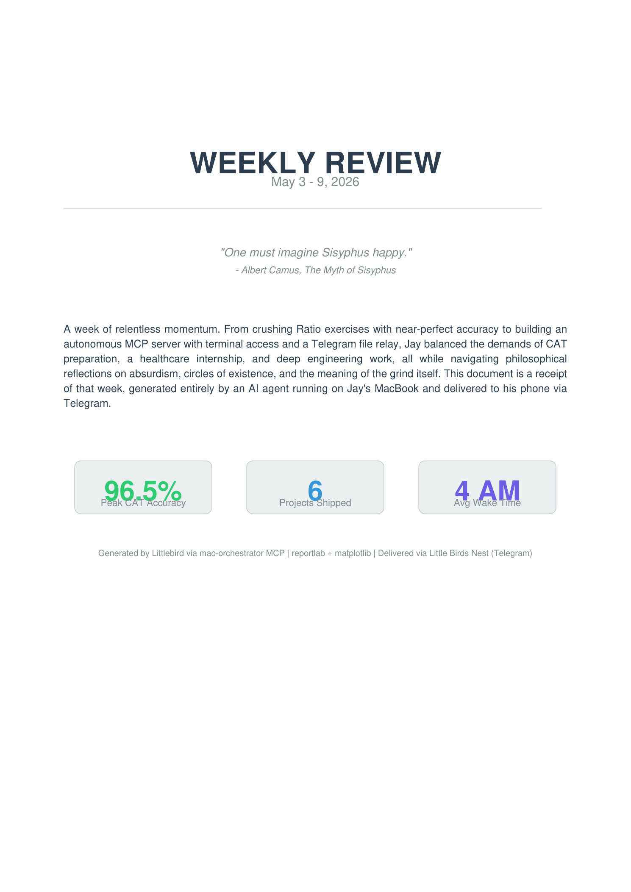

I don't really live on LinkedIn. So apart from my tools, I made you this — my thoughts on where Littlebird goes next.
You know this. It's why you built what you built. The question is what comes next.
Because they're not buying the same thing. Claude is brilliant and empty — it meets you fresh every morning. Littlebird already knows what you did yesterday, who matters this week, and what you're trying to build this year.
As long as Littlebird is filed as "another chat app," it gets price-compared and loses. The moment it's "the AI that remembers your life," there's no comparison.
The repositioning is already underway. The strategy is making it unmistakable.
I built an MCP server that wires my whole Mac into Littlebird — a private tunnel, real filesystem access. "Find the file we mentioned in that meeting" isn't a search. It's an action.
Littlebird can't hand files back directly, so I built Little Bird's Nest — a Telegram bot that gives it a way to reach me. One evening I asked it to look at everything I'd done that week. It wrote the report — charts, data, the works — and sent it to my phone.

I left a video paused on my screen for an hour. Littlebird thought I watched the whole thing.
Here's a product idea — Littlebird sees what's on screen, but not how present you are with it. A document you're typing into and a tab you forgot to close look the same.
The signal is already there: how much the screen is changing over time. A frozen frame means idle. Rapid changes mean real work. Reading engagement, not just content, would make the memory dramatically more accurate.
Engagement-weighted attentionI built a routine I call Midnight Neuroplasticity — every night it scans the day's context, triages what matters into long-term identity and short-term tasks, and delivers a morning briefing.
The dream gets real when it's native. When Littlebird can update its own memory overnight — when context isn't just collected but actively refined. Long-term: what you're building this year. Short-term: what's due Thursday. Not vibes — facts, with numbers.
And then it stops waiting to be asked. Proactivity is the thing nobody's gotten right. Littlebird is the only one already holding the context to earn it.
I build small tools that take weight off my own life — a memory system, a few MCP servers, a calculator that thinks in 3D. I'm applying because Littlebird is the first product I've used that's trying to do that for everyone.
The labs are chasing how smart a machine can be. Littlebird is chasing something I care about more: how much it can carry for you.